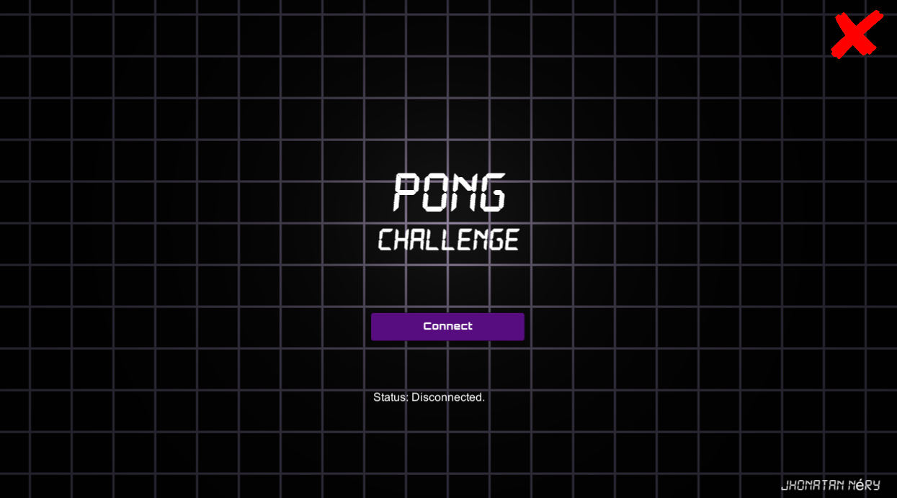
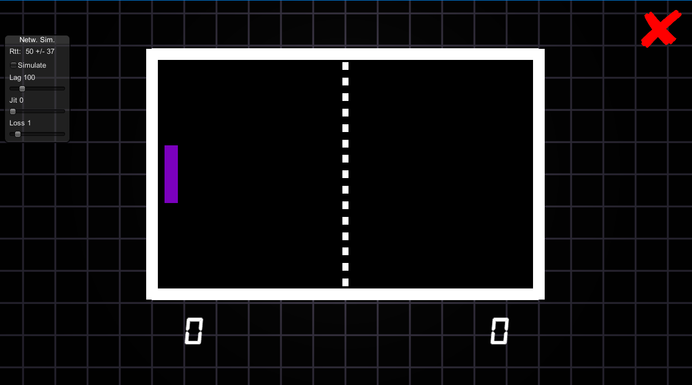
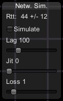
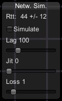

Project
Pong Network (Photon)
Platform:
Windows (Computer)
Description:
it was developed using the Unity 2020.1.16f1 engine plus the PUN2 API (Photon Unity Networking 2);
- This is a 3D project, but with “Sprite” shaders applied to objects to remind you of the classic 2D game;
- We chose to create a single scene, but with two screens activated and deactivated during the navigation;
- Point lighting was applied to create focus on the game title;
- It was applied to the ball a physical material that simulates the elasticity of a rubber ball;
- Photon Unity Network 2 Free:
- An application was created in the Photon Public Cloud related to the Pong Challenge, this application generated an ID that was entered in the PUN 2 FREE API (Photon Unity Network 2 Free) imported into the Unity project. This ID
is used as a reference point for machines wishing to join the network;
- The Photon Public Cloud is a signaling server (It only serves to store the IPS and ports of the connected players) it points to machines running PUN applications with the same ID;
- PUN is a solid foundation for any type of room-based multiplayer game in Unity; promises ease of implementation with performance, reliability, and scalability;
- Once connected, the player receives the IP of the other players, no matter where the Photon server is running, because the signaling server is only used in the creation of the connection, after created the players connect directly;
- In Pong Challenge, the game server is the first player to run it, becoming a host. The second player is client only.
- For an object to appear for all players I need to add the “Photon View” script that observes the behavior of the object.
Game Design Document (GDD)
Game Design Document (GDD) is the document that guides the process of developing a game and is dependent on the context of each project.
The Game:
Pong is a sports game developed and published by Atari in 1972. The Pong Challenge developed in this project is an interpretation from the original.
Objective:
It has a similar proposal to the sports game called table tennis.
Software and Hardware:
The emailed build generated in the Unity engine is specific to run on platforms with Microsoft Windows operating systems. However, the engine allows the creation of executables for different operating systems (Android, Linux, etc.) and different platforms (Computer, Smartphone, etc.).
Navigability:
First a splash screen is presented, where the first player connects to a game room, their racket and table appear and the second player is awaited. As soon as the second player enters the virtual room, his racket appears. for the first player, the ball is thrown and the game begins. You can end the game from any of the screens.
Gameplay:
- Players only move up and down, only on their y axis. Controls are directional arrows or the W and S keys;
- If the speed of the ball decreases and it moves slowly in the center of the table, players have the option to press the “space” key and launch the ball again;
- If the client player (player 2) leaves the connection, the ball is fixed in the center of the screen.
Mechanics:
- The ball is played randomly from its point of origin (center of the screen) to the right (up or down) or left (up or down);
- If the ball collides with the player's or opponent's racket, the angle is checked of the collision, and this angle influences the exit direction of the ball:
- If the racket hits the ball in the upper corner, it must bounce towards the upper edge of the table;
- If the racket hits the ball in the center, it must bounce to the opposite side, horizontally (not up or down);
- If the racket hits the ball in the bottom corner, it must bounce towards the bottom edge of the table.
- If it collides with the horizontal borders of the table, the vertical direction of the ball is changed.
Scoring:
If the ball touch the vertical wall behind one of the players, the opposing player is scored.
Transition:
There aren't in this version: levels, game limits (time, or score), leaving for the players to stipulate the game goal.
Control (s):
Mouse and keyboard.
  
